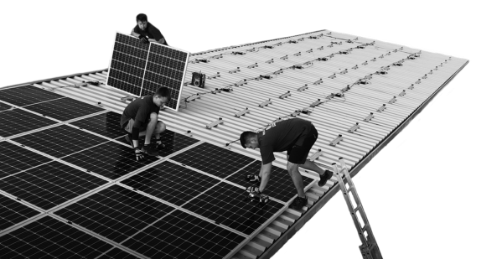

Panele fotowoltaiczne w biurze w Ostrowie Wielkopolskim
W 2020 roku w naszym biurze w Ostrowie Wielkopolskim powstaje instalacja fotowoltaiczna o mocy 49,68 kWp, składająca się z 138 paneli. Instalacja będzie zaspokajała 50% zapotrzebowania w energię całego biurowca (18 najemców), zużywającego
miesięcznie ok. 9000 kWh. To ok. 4500 kWh/miesiąc zielonej energii wytworzonej bez szkody dla środowiska. Instalacja fotowoltaiczna w naszym ostrowskim biurze jest największą pod względem mocy instalacją w całym województwie wielkopolskim,
a także jedyną taką niezależną konstrukcją pod panele PV. Przykładowo: w sierpniu 2020 roku instalacja wytworzyła 1,54MWh, co dla środowiska oznacza: redukcję emisji CO2 (1544,1 kg), a także ekwiwalent 18,07 posadzonych drzew!
Koszt montażu paneli fotowoltaicznych powinien zwrócić się już po 7 latach użytkowania.
